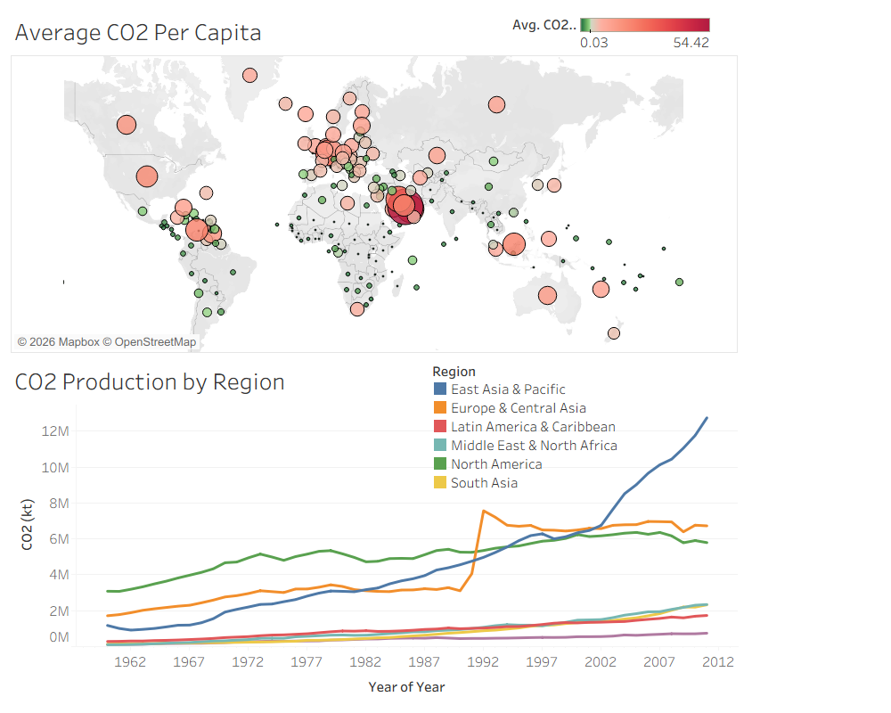

An interactive Tableau analysis exploring global CO2 emissions, average CO2 per capita, and regional emission trends over time.
This project uses Tableau to visualize global CO2 emissions and compare emission patterns across countries and geographic regions. The dashboard combines a geographic map with a time-series visualization to provide both location-based and historical perspectives on CO2 production.
The dashboard combines a global map of average CO2 per capita with a regional trend chart showing changes in CO2 production over time.

This project strengthened my ability to build Tableau dashboards that combine geographic and time-series analysis. I practiced selecting visualizations that match the analytical question, comparing regional trends, and organizing multiple views into a dashboard that communicates patterns clearly and efficiently.
Explore more of my work, professional experience, and data visualization projects.